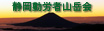

| アウトドア関係 | |
| 我が「たすまんず」発足のきっかけとなった、「タスマニアントラック」のＨＰです。登山ツアーやエコツアーなどをやっています。 | |
|  | 静岡を中心に登山やハイキング、クライミングなどを行っている会です。 興味ある方は是非一度覗いてみてください♪ |
| 「やってみよう同好会」 知的好奇心あふれる大人のためのクリエイティブでエキサイティングでバラエティーなサークル （静岡の同好会ですよ〜） | |
| 「１００スキ好きクラブ」 １００スキとは１００円で買えるスキレット（フライパン）の事です。「１００スキ好きクラブ」は、１００スキをこよなく愛する「１００スキユーザー」のみなさんの情報交換の場です。（はまります。一回見てみて〜 ｂｙべっしー） | |
| 便利なページ | |
| 天気を調べるのに便利なサイトです。２０㎞のエリアメッシュは、なかなか便利ですよ。 | |
| お友達ページ | |
| 一見、海外サイトと思いきや、れっきとした国内サイトです。管理人が所属するBIPサイト。アウトドア的活動もあり。内容は見てみて！！ | |
| とりあえずウチのバナーです。また、作り替えますがとりあえず・・・ リンクは御一報下さい。 |